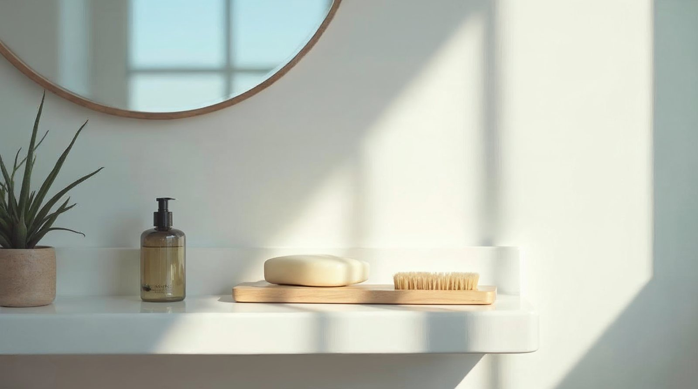
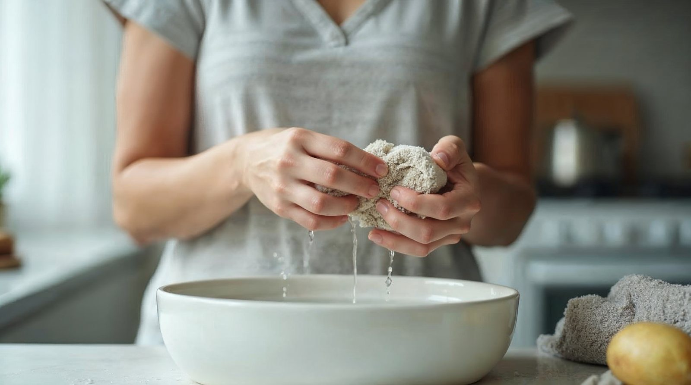
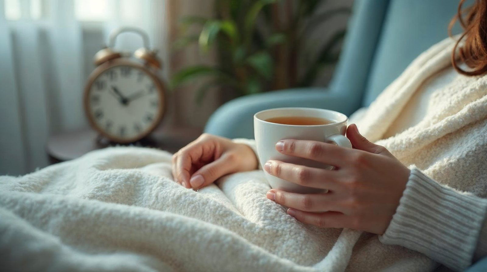
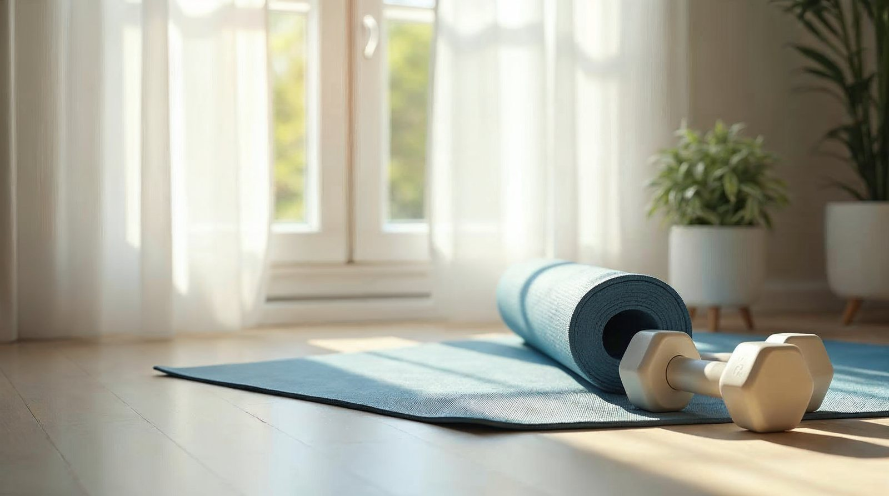
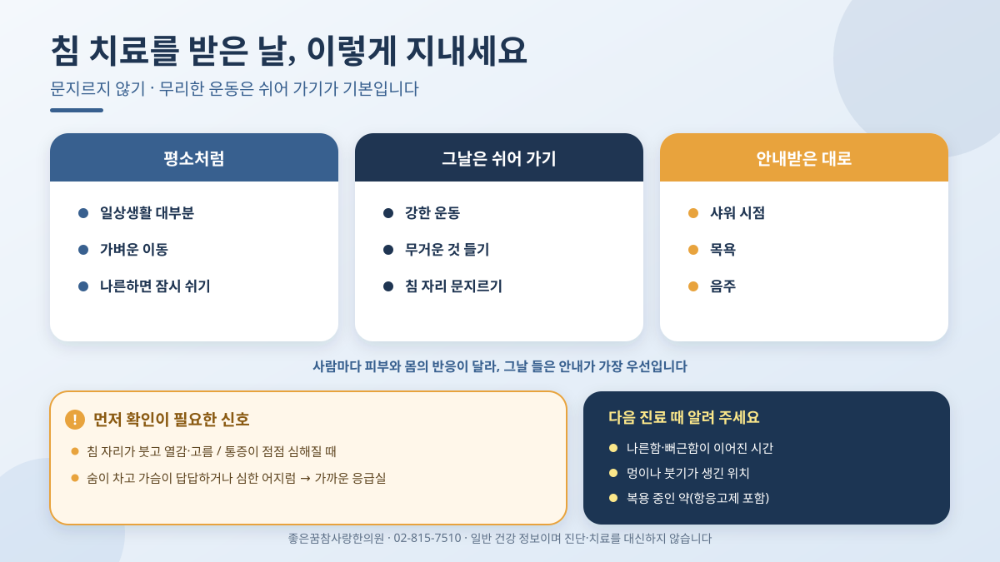

이종호 한의사 감수좋은꿈참사랑한의원 대표원장 (한의사 면허번호 19769)발행 2026-11-23 · 수정 2026-11-26
이 글의 차례
- 왜 치료 뒤 조심하나요
- 왜 침 맞은 뒤 나른함이 오는 분이 있나요
- 운동은 언제부터, 어느 정도로 다시 시작하면 될까요?
- 샤워와 음주는 어떻게 생각하면 될까요?
- 직업과 생활에 따라 이렇게 조정해 보세요
- 다음 진료 때 이것만은 알려 주세요
- 자주 하는 오해
- 예를 들면 이런 경우입니다
- 침 자리는 왜 그날 손대지 않는 게 좋을까요?
- 치료 뒤에 먹고 마시는 것은 어떻게 하나요?
- 치료받은 날 밤에는 이렇게 쉬어 보세요
- 왜 생활 이야기를 매번 다시 여쭙나요
- 먼저 이렇게 여쭙니다
- 일상에서 먼저 해 볼 수 있는 것
- 한의원에서 함께 살필 수 있는 경우
- 치료 뒤 시간대별로 이렇게 지내 보세요
- 추나나 약침을 함께 받은 날은 무엇이 다른가요?
- 계절에 따라 신경 쓸 점도 있나요?
- 스스로 점검해 보세요
- 처음 침을 맞는 분이 특히 알아 두면 좋은 점
- 이렇게 기록해 오시면 상담이 쉬워집니다
- 이런 증상은 먼저 확인이 필요합니다
- 일정이 빠듯한 날은 어떻게 하나요?
- 관련 글
침 치료를 받은 날에도 일상생활은 대부분 평소처럼 하셔도 되지만, 침 자리를 문지르지 않고 그날은 무리한 운동을 쉬어 가는 것이 기본입니다. 샤워와 음주는 받은 치료와 피부 상태에 따라 안내가 다를 수 있어, 진료 때 들은 안내를 우선해 주세요. 치료 뒤 나른하다면 잠시 쉬었다 이동하시면 됩니다.
왜 치료 뒤 조심하나요
- 침 자리를 문지르거나 세게 누르면 작은 멍이나 자극이 생길 수 있습니다.
- 치료 직후에는 몸이 이완돼 나른하거나 졸린 분이 있어, 바로 격한 운동을 하면 어지러울 수 있습니다.
- 음주는 몸 상태에 따라 치료 뒤 반응에 영향을 줄 수 있습니다.
- 사람마다 피부와 몸의 반응이 달라 일률적인 규칙보다 그날의 안내가 중요합니다.
왜 침 맞은 뒤 나른함이 오는 분이 있나요
침 치료를 받는 동안에는 대개 누워서 한동안 움직이지 않고 쉽니다. 긴장했던 근육이 풀리고 숨이 느려지면서, 치료가 끝난 뒤 졸리거나 몸이 무겁게 느껴지는 분이 있습니다. 평소 바쁘게 지내던 분일수록 이 나른함을 더 크게 느끼시기도 합니다.
전날 잠을 설쳤거나 끼니를 오래 거른 날, 감기 기운이 있는 날에도 같은 치료에 나른함이 더 오래갈 수 있습니다. 그래서 저는 치료 전에 컨디션을 여쭙고, 그런 날은 일어나기 전에 조금 더 누워 계시도록 안내합니다.
운동은 언제부터, 어느 정도로 다시 시작하면 될까요?
치료받은 날 걷기나 가벼운 스트레칭은 대개 괜찮습니다. 다만 숨이 찰 만큼 뛰거나, 무거운 기구를 드는 근력 운동, 치료 부위를 크게 비트는 운동은 그날은 쉬어 가시길 권합니다.
다음 날에는 평소 하던 운동을 절반쯤의 강도로 시작해 보세요. 운동 중이나 뒤에 치료 부위가 다시 뻐근해지면 그 자리에서 멈추고, 어떤 동작에서 그랬는지 기억해 두셨다가 다음 진료 때 말씀해 주시면 됩니다.
- 걷기, 가벼운 스트레칭: 치료받은 날에도 무리 없는 범위에서 하셔도 됩니다.
- 달리기, 구기 운동, 등산: 다음 날 몸 상태를 보고 가볍게 시작해 보세요.
- 무거운 근력 운동: 치료 부위에 힘이 실리는 동작은 하루 이틀 강도를 낮춰 주세요.
- 수영이나 사우나: 피부와 침 자리 상태를 보고, 진료 때 들은 안내를 따라 주세요.
샤워와 음주는 어떻게 생각하면 될까요?
샤워는 침 자리를 문지르지 않는 선에서 가볍게 하시는 분이 많습니다. 다만 침 자리가 붉거나 피부가 예민한 날, 약침을 함께 받은 날은 안내가 달라질 수 있어 귀가 전에 들은 내용을 먼저 따라 주세요. 때를 미는 일은 그날은 쉬어 주세요.
술은 몸을 쉽게 지치게 하고 잠을 얕게 만들 수 있어, 치료받은 날만큼은 줄이거나 쉬어 가시길 권합니다. 피할 수 없는 자리가 있다면 치료 전에 미리 말씀해 주세요. 그날 치료 방법을 함께 정할 수 있습니다.
직업과 생활에 따라 이렇게 조정해 보세요
- 하루 종일 앉아 일하는 분은 치료 뒤 한두 시간마다 일어나 가볍게 걸어 주시면 뻐근함을 덜 느끼는 데 도움이 됩니다.
- 몸을 많이 쓰는 일을 하는 분은 치료 시간을 일과 뒤로 잡으면 치료받은 날 무리하는 일을 줄일 수 있습니다.
- 운전을 오래 해야 하는 분은 치료 직후 바로 장거리 운전을 잡지 않도록 일정을 여유 있게 잡아 주세요.
- 아이를 돌보는 분은 치료받은 날 아이를 안을 때 한쪽으로만 안지 않도록 번갈아 주세요.
다음 진료 때 이것만은 알려 주세요
치료 뒤 생활에서 어떤 일이 있었는지가 다음 치료를 정하는 데 큰 도움이 됩니다. 별일 없었다면 "괜찮았어요" 한마디도 좋은 정보입니다.
나른함이 언제까지 갔는지, 운동이나 샤워를 했을 때 불편하지 않았는지, 침 자리에 자국이 남았는지를 짧게 말씀해 주세요. 저는 그 이야기를 듣고 치료 강도와 쉬는 시간, 다음 진료 간격을 함께 조정합니다.
자주 하는 오해
- 침 맞은 날은 아무것도 하면 안 된다고 여기기 쉽지만, 걷기나 출근, 집안일 같은 평소 생활은 대부분 이어가셔도 됩니다.
- 뻐근하니 세게 주무르면 풀린다고 생각하기 쉽지만, 침 자리를 문지르면 멍이나 자극이 커질 수 있어 그날은 손을 대지 않는 것이 좋습니다.
- 운동은 치료 효과를 위해 바로 해야 한다고 여기기 쉽지만, 격한 운동은 그날은 쉬고 다음 날부터 몸 상태를 보며 강도를 올려 가시면 됩니다.
- 샤워는 언제 해도 똑같다고 생각하기 쉽지만, 피부가 민감하거나 침 자리가 붉은 날은 진료 때 들은 안내를 따라 주세요.

예를 들면 이런 경우입니다
- 예를 들어 퇴근 뒤 헬스장에 가는 직장인이라면, 치료받은 날은 근력 운동을 가볍게 줄이거나 쉬고, 다음 진료 때 운동 뒤 몸 상태를 알려 주시면 치료 시기를 함께 조정합니다.
- 예를 들어 아이를 안고 다니는 육아 중인 분이라면, 치료 부위에 무리가 덜 가도록 안는 자세를 함께 이야기하고, 귀가 전에 잠시 쉬었다 가시도록 안내합니다.
- 예를 들어 저녁 모임이 잡힌 날이라면, 치료 전에 미리 말씀해 주시면 그날 치료 방법과 음주에 관한 안내를 함께 드립니다.
침 자리는 왜 그날 손대지 않는 게 좋을까요?
침이 들어갔던 자리는 눈에 거의 보이지 않을 만큼 작지만, 그날은 피부와 그 아래 조직이 아직 자극을 받은 상태입니다. 여기를 손톱으로 긁거나 세게 주무르면 작은 멍이 생기거나 따끔한 느낌이 오래갈 수 있습니다.
가려운 느낌이 들 때는 긁기보다 손바닥으로 가볍게 덮어 두는 정도가 좋습니다. 붙여 드린 것이 있다면 안내받은 시간만큼 두었다가 떼어 주세요.
치료 뒤에 먹고 마시는 것은 어떻게 하나요?
식사는 평소처럼 하셔도 됩니다. 다만 치료 직후 바로 과식하면 몸이 더 무겁게 느껴질 수 있어, 배가 많이 고프셨다면 가볍게 드시는 편이 편합니다.
물은 평소처럼 마시면 됩니다. 커피처럼 카페인이 많은 음료를 늦은 시간에 드시면 그날 밤 잠을 방해할 수 있어, 저녁 치료를 받으셨다면 조금 줄여 보세요. 치료받은 날 밤의 잠은 다음 진료 때 꼭 여쭙는 내용이기도 합니다.
치료받은 날 밤에는 이렇게 쉬어 보세요
- 평소보다 조금 일찍 잠자리에 들어 몸이 쉬는 시간을 늘려 주세요.
- 뜨거운 물에 오래 몸을 담그기보다 미지근한 물로 짧게 씻는 편이 편합니다.
- 치료 부위를 바닥에 깔고 오래 누워 있기 불편하다면 자세를 바꿔 주세요.
- 다음 날 아침 일어났을 때 몸이 어떤지 한 줄만 적어 두시면 상담에 도움이 됩니다.
왜 생활 이야기를 매번 다시 여쭙나요
침 치료 자체는 진료실에서 끝나지만, 몸은 그 뒤의 하루를 지내며 반응합니다. 치료 뒤 바로 무거운 짐을 옮겼는지, 오래 운전했는지에 따라 같은 치료라도 다음 진료 때 느낌이 달라질 수 있습니다.
그래서 저는 치료 기록 옆에 생활 이야기를 함께 적어 둡니다. 다음 진료에서 같은 이야기를 반복해 묻는 것처럼 느끼실 수 있지만, 치료와 생활이 어떻게 맞물리는지 보기 위한 과정입니다.
먼저 이렇게 여쭙니다
- 치료 뒤 바로 운동이나 일정이 있나요?
- 직접 운전해서 돌아가시나요?
- 예전에 침 치료 뒤 어지럽거나 나른했던 적이 있나요?
- 항응고제를 드시거나 피부가 예민한 편인가요?

일상에서 먼저 해 볼 수 있는 것
- 침 자리를 손으로 문지르거나 세게 누르지 않기
- 치료 당일 강한 운동이나 무거운 것을 드는 일은 쉬어 가며 하기
- 피곤하거나 어지러우면 잠시 앉아서 쉬었다가 이동하기
- 샤워 시점과 목욕, 음주는 받은 안내대로 하고 헷갈리면 문의하기
한의원에서 함께 살필 수 있는 경우
- 치료 뒤 몸이 나른하거나 졸린 느낌이 있을 때 이동 방법과 휴식을 함께 정합니다.
- 운동을 꾸준히 하는 분은 치료 시기와 운동 강도를 함께 조정합니다.
- 피부가 민감한 분은 치료 부위 관리 방법을 함께 안내받을 수 있습니다.
좋은꿈참사랑한의원에서는 치료 전에 그날 일정과 몸 상태를 여쭙고, 치료 뒤에는 샤워·운동·음주처럼 그날 지켜 주실 점을 귀가 전에 알려 드립니다. 다음 진료에서는 치료 뒤 생활에서 불편했던 점이 있었는지부터 이어서 확인합니다.
첫 방문에는 진료실에서 불편한 곳과 함께 잠, 소화, 배변, 몸의 온기를 여쭙고, 진맥을 짚고 필요하다고 판단되면 손으로 살피는 진찰이나 초음파로 확인을 더합니다.
치료 전에 오늘 일정과 이동 방법을 확인하고, 치료가 끝나면 바로 일어나지 않고 잠시 누워 쉬었다가 천천히 일어나시도록 안내합니다. 귀가 전에는 그날 샤워와 운동, 음주에 관해 지켜 주실 점을 말씀드립니다.

치료 뒤 시간대별로 이렇게 지내 보세요
- 치료 직후: 바로 일어나지 말고 잠시 앉아 있다가 천천히 움직이시고, 어지러우면 대기실에서 쉬었다 가세요.
- 귀가 길: 나른함이 남아 있으면 운전 전에 충분히 쉬고, 계단보다 엘리베이터를 이용해도 좋습니다.
- 당일 저녁: 걷기 같은 가벼운 활동은 괜찮고, 격한 운동과 과음은 쉬어 가며 침 자리는 문지르지 않습니다.
- 다음 날: 뻐근함이 줄었는지 살펴보고, 운동은 평소보다 가볍게 시작해 몸 상태를 보며 늘려 가세요.
추나나 약침을 함께 받은 날은 무엇이 다른가요?
침과 함께 추나를 받은 날에는 관절과 근육을 움직인 뒤라, 그날 저녁 몸이 평소보다 묵직하게 느껴질 수 있습니다. 이런 날은 무거운 짐을 들거나 오래 한 자세로 있는 일을 조금 더 줄여 주세요.
약침을 함께 받은 날은 시술 부위를 문지르지 않는 것과 목욕에 관한 안내가 침만 맞은 날과 다를 수 있습니다. 여러 치료를 함께 받으셨다면 귀가 전에 그날 지켜 주실 점을 한 번 더 여쭤 보셔도 좋습니다.
계절에 따라 신경 쓸 점도 있나요?
추운 날에는 치료 뒤 따뜻해진 몸으로 바로 찬바람을 맞으면 어깨와 목이 다시 움츠러들기 쉽습니다. 겉옷과 목도리를 챙겨 오시면 귀갓길이 한결 편합니다.
더운 날에는 치료 뒤 땀을 많이 흘리면 침 자리가 끈적이고 가려울 수 있습니다. 시원한 곳에서 잠시 땀을 식힌 뒤 이동하시고, 땀에 젖은 옷은 갈아입어 주세요.

스스로 점검해 보세요
- 치료 뒤 2~3시간 안에 격한 운동 일정이 있다
- 어젯밤 잠을 거의 못 잤거나 오래 굶은 상태다
- 예전에 침 치료 뒤 어지럽거나 식은땀이 난 적이 있다
- 치료 뒤 직접 운전해서 돌아가야 한다
- 피부가 예민하거나 멍이 잘 드는 편이다
- 항응고제나 항혈소판제를 먹고 있다
해당하는 항목은 치료 전에 말씀해 주세요. 치료 뒤 나른함이나 뻐근함은 보통 하루 이틀 안에 줄어드는지 지켜보시고, 사흘이 지나도 그대로이거나 점점 심해지면 다음 진료일을 기다리지 말고 02-815-7510으로 연락해 주세요.
처음 침을 맞는 분이 특히 알아 두면 좋은 점
처음 침 치료를 받는 날에는 긴장 때문에 몸이 굳어 있다가, 치료가 끝나고 긴장이 풀리면서 나른함을 더 크게 느끼는 경우가 있습니다. 그날은 중요한 일정을 바로 뒤에 잡지 말고 여유를 두시길 권합니다.
치료 중이나 끝난 뒤 속이 울렁거리거나 식은땀이 나는 느낌이 들면 참지 말고 바로 말씀해 주세요. 누운 채로 잠시 쉬면서 상태를 함께 살핍니다. 이런 경험이 있었다면 다음 치료에서는 침의 개수와 자극을 줄여 시작합니다.
이렇게 기록해 오시면 상담이 쉬워집니다
- 치료 뒤 나른함이나 뻐근함이 있었다면 얼마나 이어졌는지
- 운동이나 음주를 한 날과 그 뒤의 몸 상태
- 침 자리에 멍이나 붓기가 생겼던 위치
- 복용 중인 약(항응고제 포함)
- 치료 뒤 그날 밤 잠은 어땠는지, 평소보다 깊이 잤는지 자주 깼는지
- 평소 하는 운동의 종류와 횟수, 다음 치료 전까지 잡힌 큰 일정
치료 뒤 생활에 대한 안내는 그날 받은 치료와 몸 상태에 따라 조금씩 달라집니다. 이 글은 일반적인 기준이니, 진료실에서 들은 안내가 있다면 그것을 먼저 따라 주세요.
이런 증상은 먼저 확인이 필요합니다
- 침 자리의 멍이 점점 커지거나 붓고 뜨거운 경우, 열이 나거나 고름이 나오는 경우
- 숨이 차거나 가슴이 아프고 답답한 경우, 어지럼이 심한 경우
이런 신호가 있으면 한의원보다 가까운 병원이나 응급실을 먼저 찾으세요.
일정이 빠듯한 날은 어떻게 하나요?
점심시간이나 출근 전처럼 짧은 시간을 내서 오시는 분도 많습니다. 이런 날은 치료 뒤 쉬는 시간이 줄어들기 쉬워, 접수할 때 다음 일정이 몇 시인지 알려 주세요. 그 시간 안에서 쉬는 시간을 확보할 수 있도록 치료 순서와 길이를 함께 맞춥니다.
시간에 쫓겨 치료 직후 뛰어서 이동하면 어지럽거나 나른함이 더 크게 올 수 있습니다. 조금 늦더라도 천천히 걸어 이동해 주세요.
관련 글
- 침을 맞은 날 샤워나 목욕은 언제 해도 되나요?
- 침을 맞은 자리에 멍이 들거나 뻐근한 느낌이 남는 것은 괜찮은가요?
- 침 치료를 받기 전에 식사는 어떻게 하면 되나요?

여쭙는 것
- 치료 뒤 바로 운동이나 일정이 있나요?
- 직접 운전해서 돌아가시나요?
- 예전에 침 치료 뒤 어지럽거나 나른했던 적이 있나요?
생활에서 해 볼 것
- 침 자리를 손으로 문지르거나 세게 누르지 않기
- 치료 당일 강한 운동이나 무거운 것을 드는 일은 쉬어 가며 하기
- 피곤하거나 어지러우면 잠시 앉아서 쉬었다가 이동하기
한의원에서 함께 살필 것
- 치료 뒤 몸이 나른하거나 졸린 느낌이 있을 때 이동 방법과 휴식을 함께 정합니다.
- 운동을 꾸준히 하는 분은 치료 시기와 운동 강도를 함께 조정합니다.
- 피부가 민감한 분은 치료 부위 관리 방법을 함께 안내받을 수 있습니다.
먼저 확인이 필요한 신호
- 침 자리의 멍이 점점 커지거나 붓고 뜨거운 경우, 열이 나거나 고름이 나오는 경우
- 숨이 차거나 가슴이 아프고 답답한 경우, 어지럼이 심한 경우
한눈에 보는 표
| 구분 | 핵심 |
|---|---|
| 여쭙는 것 | 치료 뒤 바로 운동이나 일정이 있나요? 직접 운전해서 돌아가시나요? |
| 생활에서 해 볼 것 | 침 자리를 손으로 문지르거나 세게 누르지 않기 치료 당일 강한 운동이나 무거운 것을 드는 일은 쉬어 가며 하기 |
| 한의원에서 함께 살필 것 | 치료 뒤 몸이 나른하거나 졸린 느낌이 있을 때 이동 방법과 휴식을 함께 정합니다. 운동을 꾸준히 하는 분은 치료 시기와 운동 강도를 함께 조정합니다. |
| 먼저 확인이 필요한 신호 | 침 자리의 멍이 점점 커지거나 붓고 뜨거운 경우, 열이 나거나 고름이 나오는 경우 숨이 차거나 가슴이 아프고 답답한 경우, 어지럼이 심한 경우 |
자주 묻는 질문
침 맞은 날 목욕탕에 가도 되나요?
오래 몸을 담그는 것은 안내를 받아 결정하시길 권합니다.
침을 맞고 졸음이 오는 것은 이상한가요?
사람에 따라 나른함을 느낄 수 있습니다. 운전 전에는 충분히 쉬었다가 이동하세요.
다음 치료까지 간격은 어떻게 정하나요?
증상과 반응을 보고 상담해서 정합니다.
좋은꿈참사랑한의원은 재진 때 지난번 이야기부터 이어서 여쭙니다. 진료시간과 예약은 오시는 길에서 확인하세요.
어디서 상담받을 수 있나요?
좋은꿈참사랑한의원은 서울 동작구 만양로2길 2 신성빌딩 3층·5층(서울 동작구 상도동, 7호선 상도역 3번 출구 근처)에 있습니다. 한의사 3명(이종호 대표원장, 조영기 수석진료원장, 정원영 진료원장)이 진료합니다. 진료시간은 평일 09:30~20:00(점심 13:00~14:00), 토·일·공휴일 09:30~15:00이며, 방문 전 전화로 확인을 권합니다. 예약은 네이버 예약, 카카오톡 상담, 전화 02-815-7510로 받습니다.
이 글은 일반적인 건강 정보이며 개인의 진단이나 치료를 대신하지 않습니다. 증상이 있거나 복용 중인 약이 있다면 진료를 통해 확인하세요. 치료 효과는 개인마다 다를 수 있습니다.
작성 기준: 일반적으로 알려져 있는 건강 정보를 참고해 정리했습니다(대표원장 감수). 증상 기록은 1~2주 동안 하루 1회, 비슷한 시간에 적어 오시면 지난 상태와 비교하기 쉽습니다.